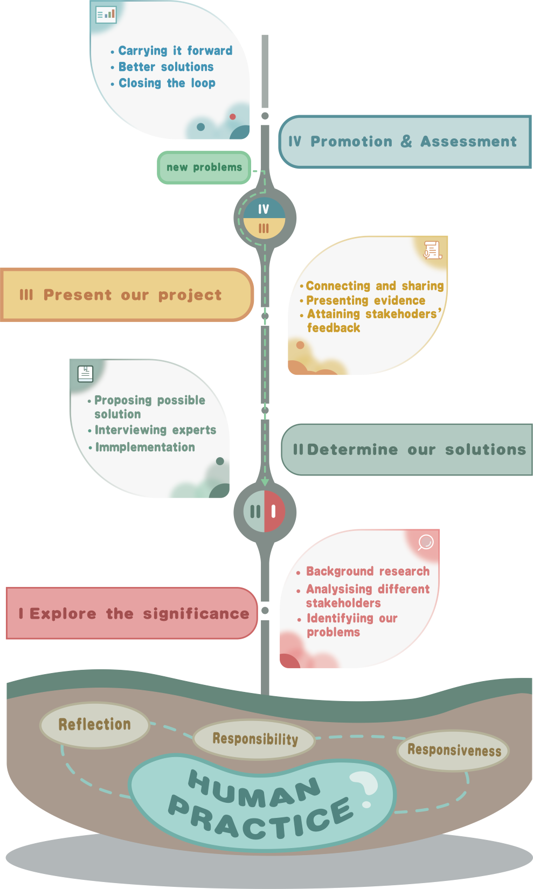

We produced two kinds of terpenes and regulated the ratio of their yield, lycopene and patchouli alcohol, for silk fragrance enhancement, antibacterial and coloration.
First, we interviewed practitioners in the silk dyeing segment and sent out an online questionnaire for fabric apparel to a wide range of consumers, who provided valuable input for the design and implementation of our project.
During the experimental design process, we professionals exchanged ideas, covering different fields such as biology, environment, and safety. We also kept close contact with other universities and shared a lot of valuable information with each other.
In order to integrate the project into the society and promote the concept and method of synthetic biology, we took different educational approaches for different age groups online and offline.
During the course of all the above activities, we ensured the information security of participants under the guidance of professionals. Throughout the HP activities, each step complements each other and forms an organic whole.

Background
We carry out our human practice in one of the purpose of shaping our project with social economic factors in reality. Thus we grasp every opportunity to share our idea of synthetic biology in sustainable production to the public. We advertise the principles and applications of our project to professors and undergraduates majoring various research areas in our campus, and residents in all walks of life nearby in the neighborhood. We also visit institutions, companies and factories covering the whole production process of a dyed silk, from spinning and weaving, the design and production of dyes and enzymes, dyeing and sewage disposal, etc. Besides, to seek inspiration and innovative solution to similar problems, we keep in touch with many other iGEM teams to exchange ideas and share progress. Also in CCiC forum we attain many feedbacks from our peers to better modified our project.
Principle
PDCA cycle of Integrated Human Practice Further, we developed PDCA cycle of Integrated Human Practice.
P(Plan): Identify the problems to be solved at this stage and formulate corresponding solutions, such as interviews, experiments and other means. Specify '5W1H': Why, What, Where, Who(or When), How.
D(Do): Execute according to the plan developed in phase P, such as perform 'interview', 'experiment' or 'design'. In phase D, work needs to be ensured that it is effectively implemented on schedule.
C(Check): Verify that the implementation has been completed according to the plan in phase P and that the implementation is up to standard. If the expected results are not achieved, new problems need to be resolved. In stage C, the tasks that have reached the standard and those that have not reached the standard need to be calculated reasonably.
A(Act): A needs to summarize the problems listed in phase C and deal with the remaining problems. Phase A may also be phase P and D of the next cycle, where problems need to be identified, plans made, and implementation.
The A phase of the PDCA may be the P and D phases of the next cycle. The PDCA cycles are connected, and each time the team solves a portion of the effort. In this cycle, the C and A phases are used to carry out the verification and summary of the cycle, so this needs to be completed by the team.